Inicio
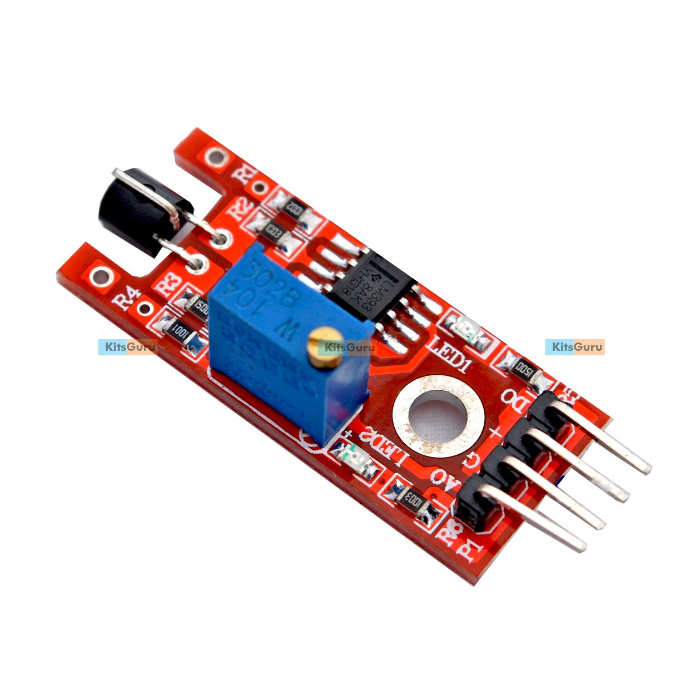
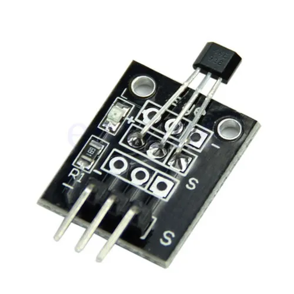
Red switch
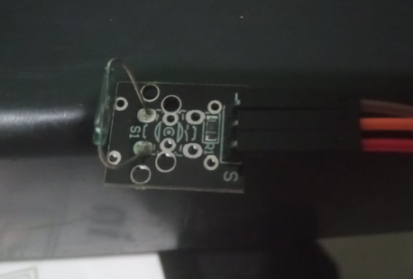 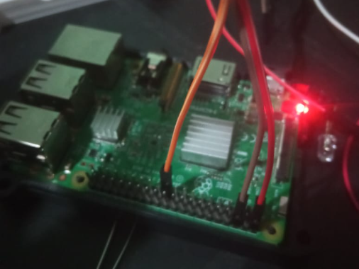 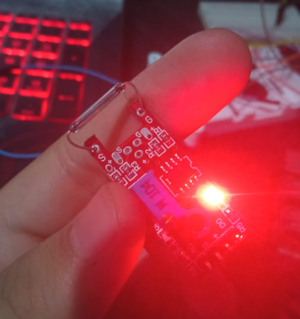
El sensor se activa al tener ua fuente de magnetismo cerca, fuciona tanto para el red switch como para su versión miniatura
import os
import time
time.sleep(0.100)
import random
import RPi.GPIO as GPIO
GPIO.setmode(GPIO.BCM)
GPIO.setup(9, GPIO.IN, pull_up_down=GPIO.PUD_UP)
while True:
if GPIO.input(9) == True:
print("iman detectado")
time.sleep(0.5)
if GPIO.input(9) == False:
print("sin contacto")
time.sleep(0.5)
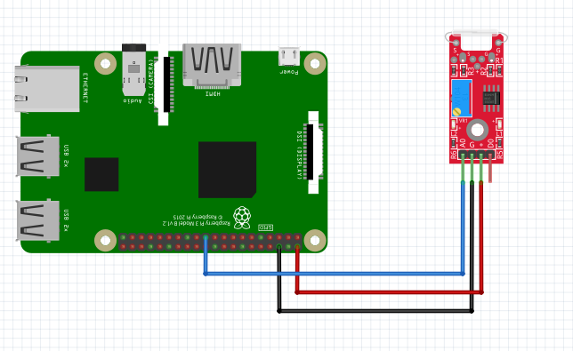
Realizado por Christopher Eduardo Barrientos Guerra
 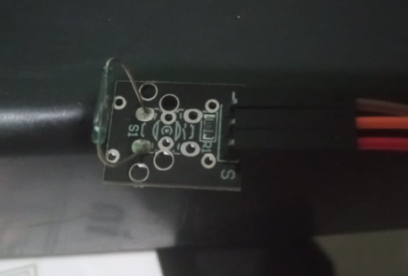
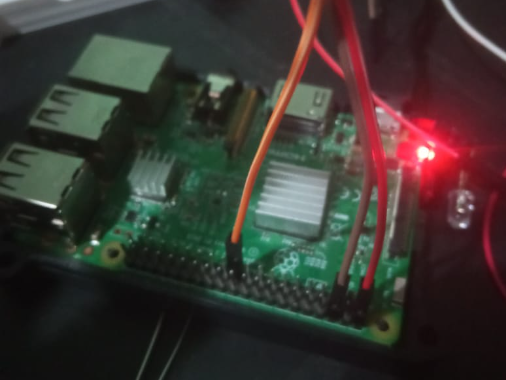
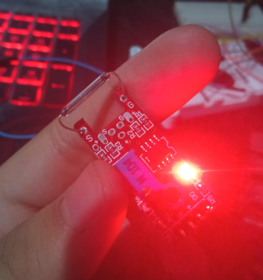
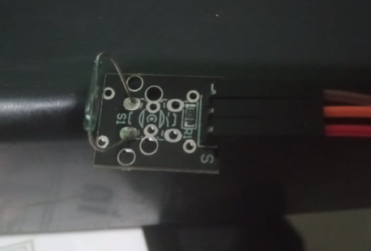
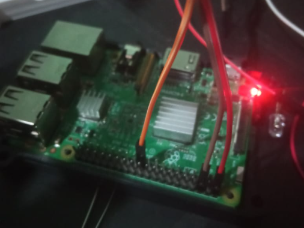
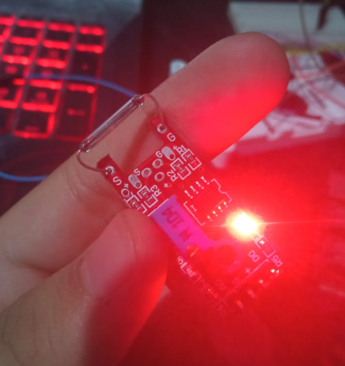
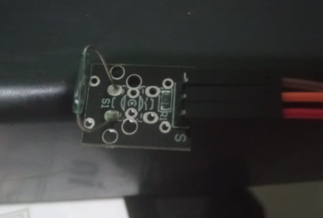
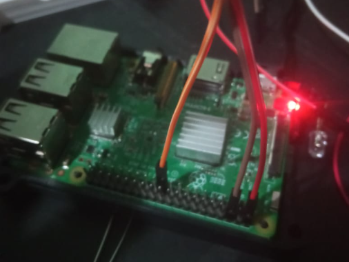
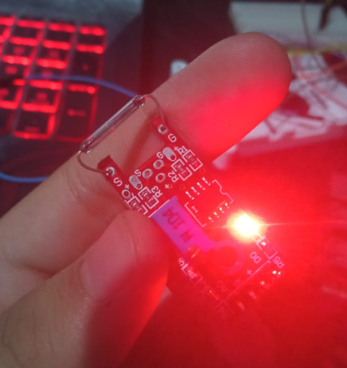
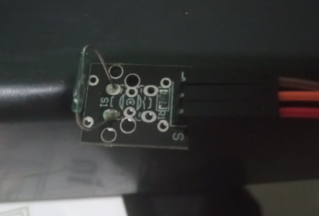
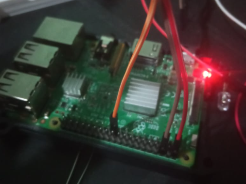
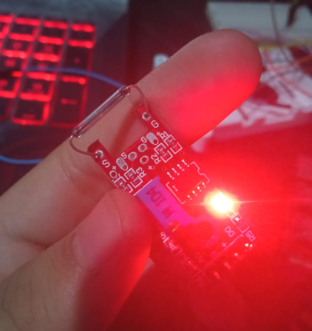